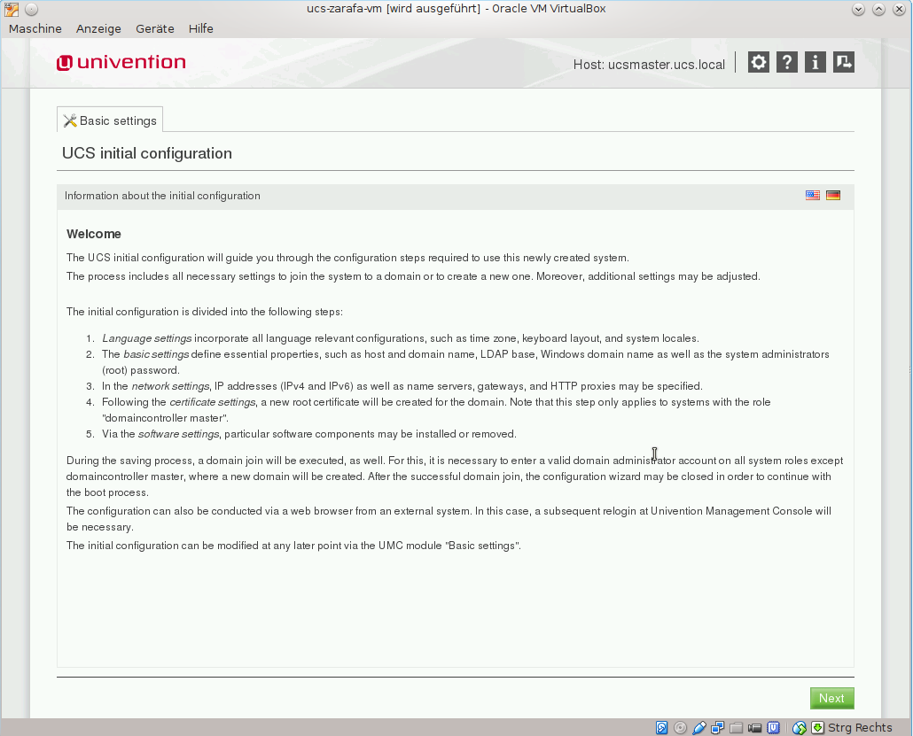
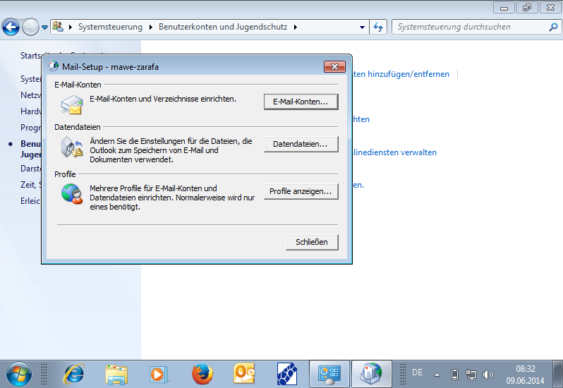
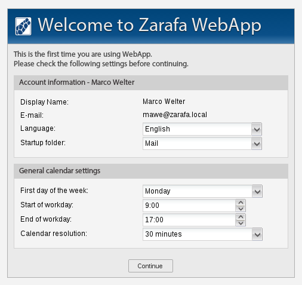
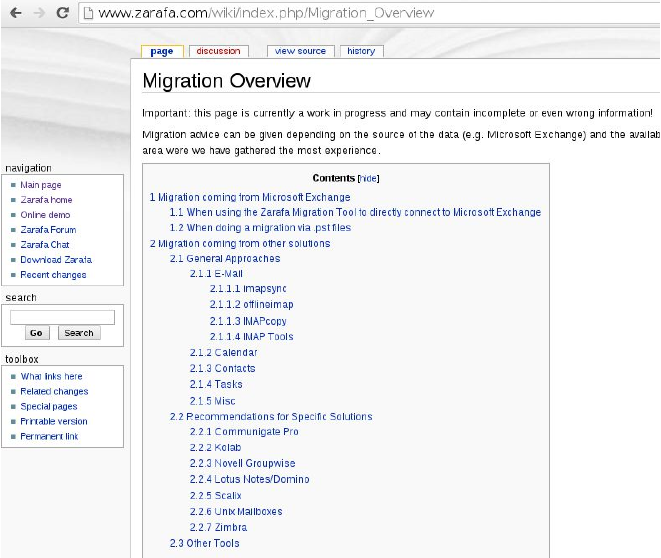

From 0 to Zarafa in a very short time
based on the Univention UCS - VM
In this chapter you will learn the complete technical background of Zarafa.
Please proceed "down" to see the individual slides
Zarafa Archiver is an additional product which can be used with Professional or Enterprise subscriptions and is there included for 20 users.
The aim of the Archiver is load distribution for older emails (period may be defined). The old emails are automatically stored to the archive server. So the production database from the size remains predictable. The archive server can be fitted with less favorable hardware because it does not rather on performance.
If Zarafa is installed out of RPM/DEB packages, in the download packages following packages are included:
Please make sure, that without exception this supplied packages are installed.
If your server update automatically, take care that those packages are excluded.
When using UCS, these recommendations are already observing and not relevant to you.The VM is based on the Univention UCS 3.2 and contains the most recent version of Zarafa as an Exchange replacement and Z-Push for the connection of mobile devices using the Active Sync protocol.
The VM stores the user / group information in an LDAP system / can be used with Samba 4 domain controller. The e-mail server is preconfigured. With the graphical interface, you can customize but the VM.
In the following steps you will learn how to take the VM running and then how they can be integrated for a productive test in your environment.
First, unzip the package downlaoding.
VMware - Open to import the vmx file Virtual Machine - About file.
other solutions - Create a new VM (Debian 64bit) and import the vmdk as a virtual disk.
By default, the VM in VMware imported with the following values, which are sufficient for test purposes in many cases.
Just the memory can be increased depending on the number of users and amount of data. Possibly is to add a second network card and to access from the local network / Internet.
After import and possibly hardware adjustments, the VM can be started.
The VM is pre-configured for operation. However, some parameters such as language, domain, ROOT password, etc. still need to be adjusted during the first start.
First, a welcome screen appears. Top right language can be changed to german, default is English.
First, you can do the language settings for the system and the keyboard.
A domain is proposed from the entered computer name. This can be varied.
Here the network setting can be adjusted.
Here the information for the SSL certificates to verify / change.
Here various components can be installed. Samba4 AD provides a complete Active Directory clone.
This step may take up to 30 minutes. The system is being prepared.
Note on the conclusion of the configuration.
Fully started system without a graphical interface
Calling the IP address of the VM in the browser [second tab here Administration].
Login to the system and domain setting.
Use of the User Administrator has the same password as ROOT.
Leave an email address for communication for apps.
The VM has a pre-configured for local use e-mail server.
The following subject areas are then treated.
From the Administration Dashboard from the menu e-mail.
Here you see all e-mail domains and mailing lists. Click on Add to add a new domain.
Select the default object type maildomain.
Enter the new domain name to be managed. This is then immediately available and configured system-wide.
To use this function you first have to install via the UCS AppCenter service Fetchmail. The first time the AppCenter this notice appears.
After installing Fetchmail is on the list of installed applications. This application is not called up individually. The configuration takes place at the individual users.
In the User under the tab Advanced Settings and then get mail from external servers, the configuration can be stored per user.
If you do not want to see directly into the Internet E-mail, you can configure via Univention Configuration Registry a relay host.
Search by key word by relay
The entry relayhost edit, and please give the FQDN of the mail server.
If the e-mail server requires authentication, please refer to the notes in the entry of relayauth.
UCS basically uses a OpenLDAP / Samba 4 LDAP server to manage users and groups.
In the demo VM no demo users are similar applied.
This chapter draws attention to the graphical management of the OpenLDAP server.
In this chapter, the following clients are described in more detail:
The Zarafaclient is not included in the VM, but can be easily downloaded and installed from the Windows desktop via a web browser
Zarafaclient must be installed on the desktop before any further steps. To do this, select ideally from the full installation.
It is not possible Zarafa profile to an existing Outlook add profile. To establish a connection, a new profile via the control panel must always first be created.
Go to using the Control / E-mail (32bit) / profile ...
With Add ... to add a new profile and select a name.
Choose from manual configuration.
In service, select the Other from the Zarafa server log.
Now enter the credentials of the VM. You can choose between unencrypted or encrypted SSL connection. Finally, select either Online or Offline profile.
If you received multiple profiles that the new profile is loaded directly. Alternatively, select the question of the profile when Outlook starts.
In an offline profile, you can optimize the synchronization on network connection by obrige settings. New information is then synchronized immediately.
By using the ActiveSync protocol can complete all current mobile devices such as iPhone, Android, Windows Mobile, etc., are connected natively
Zarafa Z-Push is the open source version of Active Sync.
Unfortunately, Z-Push is not preinstalled on the DemoVM. It can be easily installed from the UCS AppCenter.
Zarafa Z-Push supports all Active Sync functions may not support the applications on your device all the functions.
The configuration is similar to a connection to an Exchange server.
In a browser (Firefox, Internet Explorer, Google Chrome, etc.) you open the URL http: // [ip-address] / webapp the WebApp.
After the first login, a basic configuration dialog appears where you can select the language for example.
In the top row, you get access to the different areas (e-mail, calendar, etc.) and settings.
The point Zarafa will take you to a summary screen. There are various plugins can be added, such as unread emails, current events, etc. It is similar to the Today screen of MS-Outlook.
Right under Logout plugin you can display a bar over the two arrows to the left. There can be added to installed plugins similar to the Zarafa page.
New elements (email, etc.) are opened in Tab's. For example, can also be changed via keyboard shortcut between the Tab's. The controls must be switched with Tasturshortcuts in the settings.
Here the use of the following groupware features will be described in more detail:
Click with the right mouse button on any folder (eg Inbox, Calendar, etc.). Click Properties to achieve the permissions dialog.
Both in Outlook and in the WebApp the same settings are available. The profiles (such as secretary (in)) are identical.
Permissions are inherited down. If you want to share a subfolder, must at least for the top. "No rights" will be awarded. Then "folders" is selected, only so the subfolders are accessible.
To send in his name E-mails are 2 different ways.
The Send-As configuration is mostly for collecting mailboxes (info @, support @, etc.) so that the actual source is not visible.
To define an alternate opening in the WebApp under Settings / deputy and in MS-Outlook Zarafa tab under the corresponding dialog deputy.
Look for them in the global address the appropriate user and then define min. Inbox under a corresponding Berechtungsstufe. Enough is Secretary (in). Look in the WebApp out the configuration using the button to save Apply.
In order to write on behalf of an e-mail / answer, you have to first open the inbox of the delegator.
When you reply to an e-mail, the e-mail address of the delegator is automatically in the "From:" field inserted.
If you want to write a new e-mail in the order, please add the "From:" field of view even add and define the e-mail address manually.
The configuration of Send-As must be done by an administrator on the command line.
Please note that set delegate permissions override the Send-As configuration for security reasons.
While at the alternate configuration, the read / write permissions on the folder (eg Inbox) are set automatically, this must be done manually with Send-As.
The zarafa-admin command -u [resource] --add-sendas [user] adds the [Users] Send-As permission on the [resource] added.
With zarafa-admin --list sendas [resource] You can view the authorized users.
For now, on behalf of (a resource) to write an e-mail / answer, you have to first open the Inbox of the resource.
When you reply to an e-mail, the e-mail address of the resource is automatically in the "From:" field inserted.
If you want to write a new e-mail, please add the "From:" field of view even add and define the e-mail address manually.
Resources can automatically respond to meeting requests. The following options are possible:
The configuration is done in the UCS user administration in the Zarafa tab.
There are several methods for retrieving data from other groupware servers or just e-mail servers to migrate.
In the following slides, the migration of Exchange servers / PST files is described in more detail.
To perform another solution of (groupware or e-mail server) data migration, there are the following other notes Wiki
Zarafa provides with a migration script. This tool is used for automated migration of
The migration tool can be downloaded from the Internet from the Windows desktop via a web browser.
URL: http://download.zarafa.com/community/final/7.1/7.1.10-44973/windows/zarafamigrationstool.exeChoice whether to migrate from Exchange, PST files or Zarafa after PST.
Possibility to change the LOG settings.
Credentials for Exchange Server with administrator account.
Access for Zarafa administrator account. Demo1 with password Demo1 is pre-configured as Administrator.
Selecting the Create earlier mapping file.
Start the migration process.
Final Report on migrated data.
Settings can be saved for another call.
www.zarafa.com